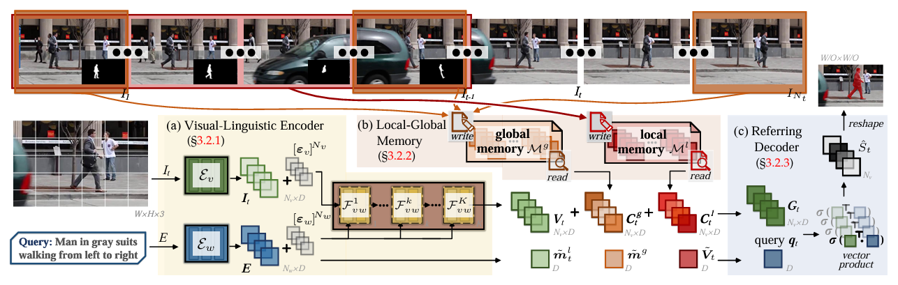

About Transformer
refer to TRANSFORMERS FROM SCRATCH
Self-attention
- Self-attention is a sequence-to-sequence operation, 而且input vectors \(x_1, x_2, ...,x_t\)和output vectors\(y_1, y_2,...,y_t\)的dimension相同
- The output vector \(y_i\) is a weighted average over all the input vectors
- So what is \(w_{ij}\) ? The weight \(w_{ij}\) is not a parameter, as in a normal neural net, but it is derived from a function over \(x_i\) and \(x_j\). The simplest option for this function is the dot product:
- 当然还要对 \(W'_{ij}\) 作 Normalization，

- Summary: 'This is the only operation in the whole architecture that propagates information between vectors. Every other operation in the transformer is applied to each vector in the input sequence without interactions between vectors.'
Understanding why self-attention works !!!
example: movie recommendation
' we make the movie features and user features parameters of the model. We then ask users for a small number of movies that they like and we optimize the user features and movie features so that their dot product matches the known likes
Even though we don’t tell the model what any of the features should mean, in practice, it turns out that after training the features do actually reflect meaningful semantics about the movie content.'
Same with the self-attention mechanism!
Self-attention 实际上是没有参数(for now)的, 只是对每个input vector，用它与其他所有vector求内积，求相关度，然后加权产生新的vector的一个工具。
那么模型怎么能在训练中趋于有效呢？模型训练时，会根据Self-attention求出的相关度符不符合实际结果，进行调整。
那么调整的是什么呢？input sequence.
假如我们现在对一串文字使用self-attension,
'we simply assign each word \(t\) in our vocabulary an embedding vector \(v_t\) (the values of which we’ll learn). This is what’s known as an embedding layer in sequence modeling'
学的就是 word embedding 后的 \(sequence\{V_t\}\)
Note

In Pytorch: basic self-attention
See basic_self_attention.py
Additional tricks
The actual self-attention used in modern transformers relies on three additional tricks.
1) Queries, keys and values
在basic self-attention中，input vector \(x_i\) is used in three different ways in the self attention operation:
- It is compared to every other vector to establish the weights for its own output \(𝐲_i\)
- It is compared to every other vector to establish the weights for the output of the j-th vector \(y_j\)
- It is used as part of the weighted sum to compute each output vector once the weights have been established
These roles are often called the query, the key and the value $$ q_i = W_q x_{i} \qquad k_i = W_kx_i \qquad v_i = W_vx_i \ w'{ij} = \frac{q_i^Tk_j}{\sqrt{k}} \ w{ij} = softmax(w'{ij}) \ y_i = \sum_j{w'{ij}v_i} $$
2) Scaling the dot product
3) Multi-head attention
In Pytorch: complete self-attention
See complete_self_attention.py
Building transformers
A transformer is not just a self-attention layer, it is an architecture
The definition of the transformer architecture is vague, but here we’ll use the following definition:
Any architecture designed to process a connected set of units—such as the tokens in a sequence or the pixels in an image—where the only interaction between units is through self-attention.
Transformers 和 Convolutions一样，have a standard approach to build self-attention layers up into a larger network. The first step is to wrap the self-attention into a block that we can repeat.
The transformer block
General structure

The block applies, in sequence: a self attention layer, layer normalization, a feed forward layer (a single MLP applied independently to each vector), and another layer normalization. Residual connections are added around both, before the normalization
！Normalization and residual connections are standard tricks used to help deep neural networks train faster and more accurately. The layer normalization is applied over the embedding dimension only. 需要再去了解一些，这里就直接拿来用
Implementation: also see in transformers_block.py
class TransformerBlock(nn.Module):
def __init__(self, k, heads):
super().__init__()
self.attention = SelfAttention(k, heads)
self.norm1 = nn.LayerNorm(k)
self.norm2 = nn.LayerNorm(k)
self.feedforward = nn.Sequential(
nn.Linear(k, 4*k)
nn.ReLU(),
nn.Linear(4 * k, k)
)
def forward(self, x):
attended = self.attention(x)
x = self.norm1(attended + x)
fedforward = self.feedforward(x)
return self.norm2(fedforward + x)
We’ve made the relatively arbitrary choice of making the hidden layer of the feedforward 4 times as big as the input and output. Smaller values may work as well, and save memory, but it should be bigger than the input/output layers.
关于MLP 、Hidden Layer参数怎么选有点忘了，先拿来用
Our first application: Classification transformer
The simplest transformer we can build is a sequence classifier. We’ll use the IMDb sentiment classification dataset: the instances are movie reviews, tokenized into sequences of words, and the classification labels are
positiveandnegative(indicating whether the review was positive or negative about the movie)
The General Idea: Use a large chain of transformer blocks to extract the information in the movie reviews. Feed it the input sequence of words from the tokenized movie reviews, transformer blocks would produce a output sequence, then do something to it to get a single classification.
The most common way to build a sequence classifier out of sequence-to-sequence layers, is to apply global average pooling to the final output sequence, and to map the result to a softmaxed class vector.

The most common way to build a sequence classifier out of sequence-to-sequence layers, is to apply global average pooling to the final output sequence, and to map the result to a softmaxed class vector.
Input: using the positions
之前我们提到，self-attention是 permutation invariant的（即input sequence 的vector 顺序改变，并不会影响每个vector 最后 output 出的结果），然后 transformer block 的 其他层 layer normalization, a feed forward layer 也都是 permutation invariant 的。这就是说，我们现在的transformer block 对于词序不同的两句话，最后输出的classification 结果是相同的。 显然对于人类语言来说，一句话中的词序变化非常影响一句话的语意。因此需要改进。
Clearly, we want our state-of-the-art language model to have at least some sensitivity to word order, so this needs to be fixed.
The solution is simple: we create a second vector of equal length, that represents the position of the word in the current sentence, and add this to the word embedding. There are two options.
option 1: position embeddings
' We simply embed the positions like we did the words. Just like we created embedding vectors 𝐯cat and 𝐯susan, we create embedding vectors 𝐯12 and 𝐯25. Up to however long we expect sequences to get. The drawback is that we have to see sequences of every length during training, otherwise the relevant position embeddings don't get trained. The benefit is that it works pretty well, and it's easy to implement.'
option 2: position encodings
' Position encodings work in the same way as embeddings, except that we don't learn the position vectors, we just choose some function \(f:ℕ→ℝ^k\) to map the positions to real valued vectors, and let the network figure out how to interpret these encodings. The benefit is that for a well chosen function, the network should be able to deal with sequences that are longer than those it's seen during training (it's unlikely to perform well on them, but at least we can check). The drawbacks are that the choice of encoding function is a complicated hyperparameter, and it complicates the implementation a little.'
note：不太懂两者区别，为什么 position encoding 不用 学 position vector？
For the sake of simplicity, we'll use position embeddings in our implementation
Text-generate Transformers
Local-Global Context Aware Transformer for Language-Guided Video Segmentation
